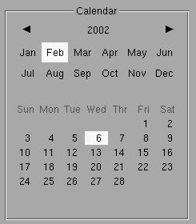

6 - LunarCalendar#
Solar calendar is commonly used worldwide, but lunar calendar is still used in many places since sun and moon play equivalent roles in the weather and ocean system. Here, I’ll make a graphic interface for convert solar calendar into moon calendar.
The graphic interface for solar calendar looks like this:
Figure 4-54. CalendarView

The conversion from solar calendar to lunar calendar is not the point in this chapter. If you are interested, you can check the source code. The interface of LunarCalendarDate is:
LunarCalendarDate.h
#ifndef _LunarCalendarDate_
#define _LunarCalendarDate_
#include <Foundation/NSObject.h>
@interface LunarCalendarDate: NSObject
{
int lunarDay, lunarMonth;
}
- (void) setDate: (NSCalendarDate *) date;
- (int) dayOfMonth;
- (int) monthOfYear;
@end
#endif /* _LunarCalendarDate_ */
Basically, you put the date into LunarCalendarDate, and get the month and day out of it. This conversion may not be bug-free, and only work between 1998-2031. But it is good enough as an example.
Now, use Gorm to build a interface like this:
Figure 4-55. Interface of LunarCalendar

Create a subclass of NSView, called CalendarView. Use this class for the custom class. The size of custom class must be width 240 and height 270. Add a NSTextField on top of it to display the lunar date.
Create a outlet called “label”in CalendarView.
Figure 4-56. Add outlet
Connect the outlet “label” to the NSTextField
Figure 4-57. Connect outlet

Save the interface as LunarCalendar.gorm. Now, let’s work on the CalendarView.
CalendarView.h
#ifndef _CalendarView_
#define _CalendarView_
#include <AppKit/AppKit.h>
@interface CalendarView : NSView
{
NSBox *calendarBox;
NSTextField *yearLabel;
NSButton *lastYearButton, *nextYearButton;
NSMatrix *monthMatrix, *dayMatrix;
NSCalendarDate *date;
NSArray *monthArray;
/* Outlet */
id label;
}
- (NSCalendarDate *) date;
- (void) setDate: (NSCalendarDate *)date;
/* Used by interface */
- (void) updateDate: (id) sender;
@end
#endif /* _CalendarView_ */
CalendarDate.m
Setup basic header and functions
#include "CalendarView.h"
#include "LunarCalendarDate.h"
@implementation CalendarView
#define isLeapYear(year) (((year % 4) == 0 && ((year % 100) != 0)) || (year % 400)
== 0)
static short numberOfDaysInMonth[] = {31, 28, 31, 30, 31, 30, 31, 31, 30, 31, 30, 3
1};
Here, I use several matrix to build the interface
- (id) initWithFrame: (NSRect) rect
{
int i, j, count=0;
NSImage *rightArrow, *leftArrow;
NSButtonCell *monthCell, *dayCell, *tempCell;
NSArray *weekArray;
[super initWithFrame: rect];
Everything is add into the NSBox
calendarBox = [[NSBox alloc] initWithFrame: NSMakeRect(0, 0, 240, 270)];
[calendarBox setBorderType: NSGrooveBorder];
[calendarBox setTitlePosition: NSAtTop];
[calendarBox setTitle: @"Calendar"];
Year is composed by two button and on text field. Press buttons to change the year. The arrow images come with GNUstep. Buttons will call -updateDate: when pressed.
yearLabel = [[NSTextField alloc] initWithFrame: NSMakeRect(85, 220, 60, 20)];
[yearLabel setStringValue: @"This Year"];
[yearLabel setBezeled: NO];
[yearLabel setBackgroundColor: [NSColor windowBackgroundColor]];
[yearLabel setEditable: NO];
[yearLabel setSelectable: NO];
[yearLabel setAlignment: NSCenterTextAlignment];
leftArrow = [NSImage imageNamed: @"common_ArrowLeft.tiff"];
rightArrow = [NSImage imageNamed: @"common_ArrowRight.tiff"];
lastYearButton = [[NSButton alloc] initWithFrame: NSMakeRect(10, 220, 22, 22)];
[lastYearButton setImage: leftArrow];
[lastYearButton setImagePosition: NSImageOnly];
[lastYearButton setBordered: NO];
nextYearButton = [[NSButton alloc] initWithFrame: NSMakeRect(198, 220, 22, 22)];
[nextYearButton setImage: rightArrow];
[nextYearButton setImagePosition: NSImageOnly];
[nextYearButton setBordered: NO];
[lastYearButton setTarget: self];
[lastYearButton setAction: @selector(updateDate:)];
[nextYearButton setTarget: self];
[nextYearButton setAction: @selector(updateDate:)];
[calendarBox addSubview: yearLabel];
[calendarBox addSubview: lastYearButton];
[calendarBox addSubview: nextYearButton];
RELEASE(yearLabel);
RELEASE(lastYearButton);
RELEASE(nextYearButton);
Matrix is used to put cells together. Cell is a light-weight of NSView. Read Introduction to Controls and Cells. Firstly, I define the cell prototype for the matrix. Matrix will use this prototype to display every cell. Each cell has a tag to identify itself.
monthArray = [[NSArray alloc] initWithObjects:
@"Jan", @"Feb", @"Mar", @"Apr", @"May", @"Jun",
@"Jul", @"Aug", @"Sep", @"Oct", @"Nov", @"Dec", nil];
monthCell = [[NSButtonCell alloc] initTextCell: @""];
[monthCell setBordered: NO];
[monthCell setShowsStateBy: NSOnOffButton];
[monthCell setAlignment: NSCenterTextAlignment];
monthMatrix = [[NSMatrix alloc] initWithFrame: NSMakeRect(10, 165, 210, 50)
mode: NSRadioModeMatrix
prototype: monthCell
numberOfRows: 2
numberOfColumns: 6];
for (i = 0; i < 2; i++)
for (j = 0; j < 6; j++)
{
tempCell = [monthMatrix cellAtRow: i column: j];
[tempCell setTag: count];
[tempCell setTitle: [monthArray objectAtIndex: count]];
count++;
}
RELEASE(monthCell);
weekArray = [NSArray arrayWithObjects: @"Sun", @"Mon" @"Tue", @"Wed",
@"Thr", @"Fri", @"Sat", nil];
dayCell = [[NSButtonCell alloc] initTextCell: @""];
[dayCell setBordered: NO];
[dayCell setShowsStateBy: NSOnOffButton];
[dayCell setAlignment: NSCenterTextAlignment];
dayMatrix = [[NSMatrix alloc] initWithFrame: NSMakeRect(10, 20, 210, 120)
mode: NSRadioModeMatrix
prototype: dayCell
numberOfRows: 7
numberOfColumns: 7];
for (j = 0; j < 7; j++)
{
tempCell = [dayMatrix cellAtRow: 0 column: j];
[tempCell setTitle: [weekArray objectAtIndex: j]];
[tempCell setAlignment: NSCenterTextAlignment];
[tempCell setEnabled: NO];
}
RELEASE(dayCell);
count = 0;
for (i = 1; i < 7; i++)
for (j = 0; j < 7; j++)
{
[[dayMatrix cellAtRow: i column: j] setTag: count++];
}
When each cell in the matrix is pressed, it will call the action of matrix. It is -updateDate: here.
[monthMatrix setTarget: self];
[monthMatrix setAction: @selector(updateDate:)];
[dayMatrix setTarget: self];
[dayMatrix setAction: @selector(updateDate:)];
[calendarBox addSubview: monthMatrix];
[calendarBox addSubview: dayMatrix];
RELEASE(monthMatrix);
RELEASE(dayMatrix);
[self addSubview: calendarBox];
RELEASE(calendarBox);
return self;
}
The title of cell in dayMatrix depending on the month. Therefore, when set date in CalendarView, it has to display days in correct cells.
- (void) setDate: (NSCalendarDate *) newDate
{
int i, currentDay, currentMonth, currentYear;
int daysInMonth, startDayOfWeek, day;
NSCalendarDate *firstDayOfMonth;
NSButtonCell *tempCell;
LunarCalendarDate *lunarDate;
Retain the date. It will be released in -dealloc.
ASSIGN(date, newDate);
Update year.
[yearLabel setStringValue: [date descriptionWithCalendarFormat: @"%Y"]];
Update month.
currentMonth = [date monthOfYear];
[monthMatrix selectCellWithTag: currentMonth-1];
Update day.
currentYear = [date yearOfCommonEra];
firstDayOfMonth = [NSCalendarDate dateWithYear: currentYear
month: currentMonth
day: 1
hour: 0
minute: 0
second: 0
timeZone: [NSTimeZone localTimeZone]];
daysInMonth = numberOfDaysInMonth[currentMonth - 1];
if ((currentMonth == 2) && (isLeapYear(currentYear)))
daysInMonth++;
startDayOfWeek = [firstDayOfMonth dayOfWeek];
day = 1;
for (i = 0; i < 42; i++)
{
tempCell = [dayMatrix cellWithTag: i];
if (i < startDayOfWeek || i >= (daysInMonth + startDayOfWeek))
{
[tempCell setEnabled: NO];
[tempCell setTitle: @""];
}
else
{
[tempCell setEnabled: YES];
[tempCell setTitle: [NSString stringWithFormat: @"%d", day++]];
}
}
currentDay = [date dayOfMonth];
[dayMatrix selectCellWithTag: startDayOfWeek + currentDay - 1];
Use LunarCalendarDate to get the lunar date and update in the NSTextField.
/* Update label */
lunarDate = [LunarCalendarDate new];
[lunarDate setDate: date];
[label setStringValue: [NSString stringWithFormat: @"%@ %d", [monthArray objectA
tIndex: [lunarDate monthOfYear]-1], [lunarDate dayOfMonth]]];
RELEASE(lunarDate);
}
When this application starts, I want it to show the date of today. Since CalendarView is not the delegate of NSApp, how do I know this application start ? In the graphic application with Gorm interface, -awakeFromNib will be called when the interface shows up. Therefore, -awakeFromNib is a good place to initialize this instance.
- (void) awakeFromNib
{
[self setDate: [NSCalendarDate calendarDate]];
}
Finally, I have to handle the user event, which all go into -updateDate:. Depending on the sender, it calculate the new date.
- (void) updateDate: (id) sender
{
int i=0, j=0, k=0;
NSCalendarDate *newDate;
if (sender == lastYearButton)
{
i = -1;
}
else if (sender == nextYearButton)
{
i = 1;
}
else if (sender == monthMatrix)
{
j = [[[sender selectedCells] lastObject] tag] + 1 - [date monthOfYear];
}
else if (sender == dayMatrix)
{
k = [[[[sender selectedCells] lastObject] stringValue] intValue] - [date dayO
fMonth];
}
newDate = [date addYear: i
month: j
day: k
hour: 0
minute: 0
second: 0];
Since LunarCalendarDate only work between 1998-2031, do nothing if it is out of range
if (([newDate yearOfCommonEra] > 1998) && ([newDate yearOfCommonEra] < 2031))
[self setDate: newDate];
}
Now, you can check the status of moon. Here is the source code: LunarCalendar-src.tar.gz